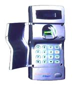
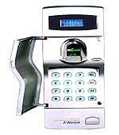

우리가 사용하고 있는 열쇠, ID CARD, 비밀번호 등의 보안장비는
복제나 도용을 당할 염려가 큽니다. 이들 보안장치를 잃어버리거나
도난당하면 이로 인한 불편은 물론 막대한 재산상의
손실을 입게 된다.
팬택미디어의 지문 인식시스템은 각 개인의 고유 지문을 미리
등록시켜 두면 그것을 통하여 시스템이 본인여부를 판단하므로
완벽한 보안과 편 의를 동시에 해결해 드리는 첨단의 생체
보안 시스템 (Biometric Security System)이다.
이제 무거운 열쇠나 ID CARD, 노출되기 쉬운 허술한 비밀번호
따위는 깨 끗이 버리자. 손끝 하나만으로 나를 직접 알아보는
첨단 보안 시스템이 있기 때문이다.
FINKEY
FINKEY는 지문을 사용하여 출입문(시건장치) 를 여는 장치로서
컨트롤 러에 등록되어 있는 지문과 출입하고자 하는 사람의 지문을
비교 판별 하여 동일한 경우에만 출입문이 개폐된다. FINKEY는 사람마다
다른 지 문을 이용하기 때문에 보안성이 완벽하며, 열쇠나 CARD 등과
같이 분실 및 도난, 도용의 위험이 전혀 없으며 또한 항상 지니고
다녀야하는 불 편함도 없는 첨단 지문인식 보안장치이다.

1. 제품의 구성
◆지문 입력기
◆지문 처리장치
◆출입문 개폐장치
◆출입자 관리 프로그램
2. 성능 / 기능
◆처리속도
지문 등록 : 약 5초
지문 비교 : 약 2초
◆관리자 기능
관리자, 사용자 등록 / 사용자 삭제 /
시간설정 / System Password Setting
◆정확도
FAR (False Accept Rate) : 0.006 ∼0.0001%
- 타인을 본인으로 잘못 인식할 확률
FRR (False Reject Rate) : 0.1 ∼0.2%
- 본인을 인식하지 못할 확률
◆사용자 기능
비교, System Check
항 목
사 양
전 원
MAIN
DC 12V / Adaptor (input : AC110 / 220V)
보 조
Lead & NiCd Battery (Dual Back up)
전 류
대 기
180mA
동 작
500mA
크 기
입력장치
70(W) x 184(H) x 61(D) mm
처리장치
180(W) x 230(H) x 55(D) mm
온 도
보 관
-20℃ ∼ 70℃
사 용
-10℃ ∼ 50℃
습 도
10 ∼ 90%
FINSIGN
FINSIGN은 별도의 처리장치 없이 PC에 연결하여 사용할 수 있는 지문
인식 시스템으로 지문 입력기, 화상처리용 보드 및 첨단의 지문 인식
알 고리즘 소프트웨어로 구성되어 있다. 지문 인식 알고리즘은
라이브러리 형태로 제공되므로 PC 사용통제 및 DATA 보안 등 독자적인
운용은 물 론이고 현재 사용중인 Officeware나 사내 전산시스템과
연결해서도 쉽 게 사용할 수 있다.

1. 제품의 구성
◆지문 입력기
◆FINSIGN 보드 (ISA)
◆운용 S / W
2. 성능
◆처리속도 (PC 기종에 따라 다소 차이가 있음)
지문 등록 : 약 5초
지문 비교 : 약 1초
◆정확도
FAR (False Accept Rate) : 0.006 ∼0.0001%
- 타인을 본인으로 잘못 인식할 확률
FRR (False Reject Rate) : 0.1 ∼0.2%
- 본인을 인식하지 못할 확률